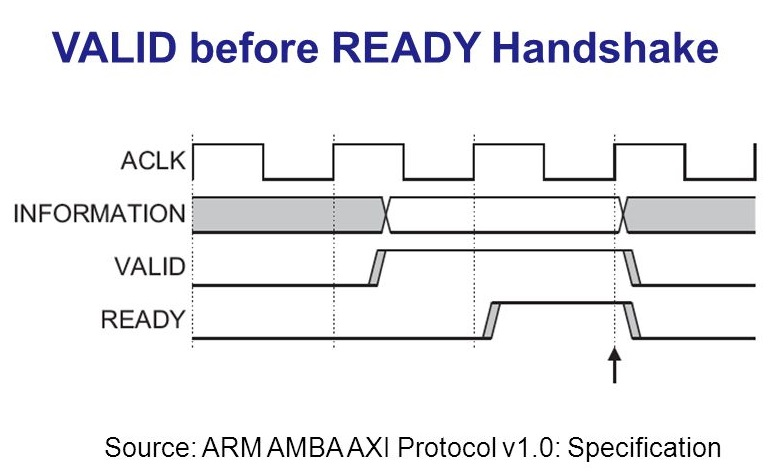
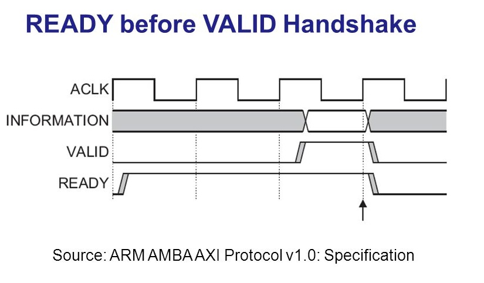
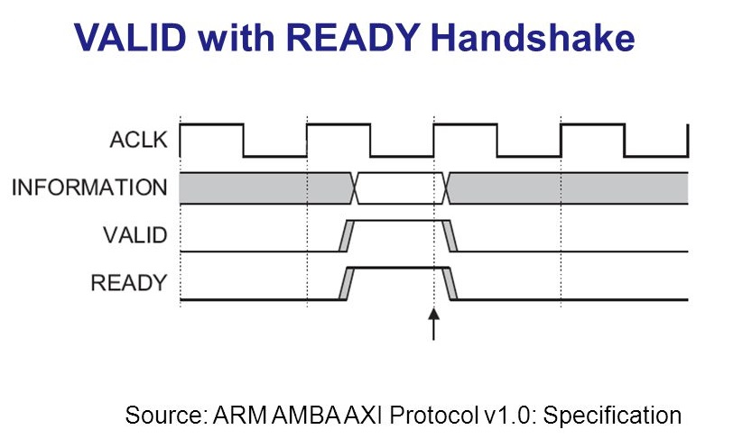
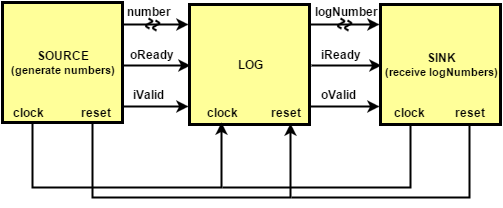

The ARM Advanced Microcontroller Bus Architecture (AMBA) is an open-standard specification to interconnect functional blocks in system-on-chip (SoC) designs.
AMBA is widely used on a range of IP-Cores. In this protocol the communication between two blocks will occur when both handshake signals READY and VALID are both HIGH on the rising edge of the clock.
The signal READY indicates when a block is ready to receive information from another block and the signal VALID indicates when a block is ready to send information to another block.
In Figure (1) can be seen the module source sending information to a module sink. The source drives the VALID signal HIGH. The data or control information from source remains stable until the destination drives the READY signal HIGH, indicating that it accepts the data or control information. The arrow shows when the transfer occurs [1].
 Figure (1){kind=link}
In the Figure (2), the module sink drives READY HIGH before the data or control information is valid. This indicates that the destination can accept the data or control information in a single cycle as soon as it became valid. The arrow shows when the transfer occurs[1].
 Figure (2){kind=link}
In Figure (3), both source and sink indicate in the same cycle that they can transfer the data or control information. In this case the transfer occurs right away. The arrow shows when the transfer occurs[1].
 Figure (3){kind=link}
A Logarithm Algorithm with AMBA AXI
The communication bus of the Logarithm module is AMBA AXI. Figure (4) shows the communication of a module source that generates numbers to the LOG module and the module sink receives the logarithm of the numbers computed by the LOG.
 Figure (4){kind=link}
Table (1) gives a description of each signal of the LOG module. Note that the module has two signals for READY and two for VALID. The signals oReady and iValid control the LOG input bus and the signals iReady and oValid control the LOG output bus.
| signal name | type | description |
|---|---|---|
| number | input | number generated by the source to stimulate the LOG |
| oReady | input | handshake signal that indicates that the LOG is ready to receive the number |
| iValid | input | handshake signal that indicates that the source is ready to send the number |
| clock | input | clock signal |
| reset | input | reset signal |
| logNumber | output | logarithm of the number computed by the LOG |
| iReady | output | handshake signal that indicates that the sink is ready to receive the logNumber |
| oValid | output | handshake signal that indicates that the LOG is ready to send the logNumber |
Reference: [1] AMBA AXI Protocol Specification